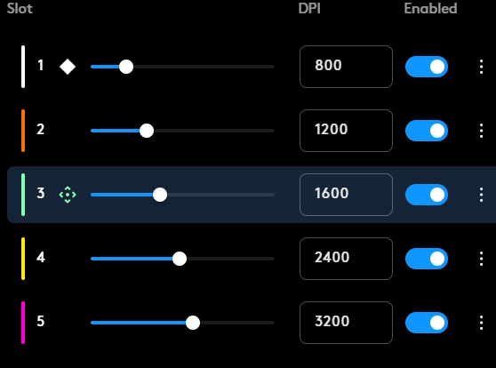

Introduction to Kovaaks Aim Training
Kovaaks aim trainer designed to improve your aiming mechanics. This guide will walk you through the fundamental task types and playlists to achieve better results.
The playlists types I'll cover can be broken down into categories each focused on a different style of mechanical skill. I'll include some major categories on this page below
- Smooth Tracking
- Reactive Tracking
- Speed Tracking
- Evasive Tracking
- Dynamic Clicking
- Static Clicking

Getting Started with Kovaaks Aim Training
To begin your Kovaaks journey, lets start finding a comfortable mouse sensitivity for you. The goal is being comfortable performing a 180-degree turn in a single motion.
The easiest way to get started is to make sure you have a good mouse dpi setting. Ideally you should be between 400 to 1600 dpi as anything higher will be hard to control but on top of that most games have a limited range of sensitivity control so you might be unable to adjust the sensitivity to your ideal range in your game of choice.